Задания №9 и №13
Инструкция к выполнению
Задания 9 и 13 объединены на одной странице не просто так. С помощью уравнений и неравенств мы исследуем наши любимые функции. Алгоритмы решения у них абсолютно одинаковые, но разные вопросы.
Уравнение спрашивает: «В какой точке функция пересекает ось ОХ?», а неравенство: «На каких значениях x функция положительна? Или отрицательна?»
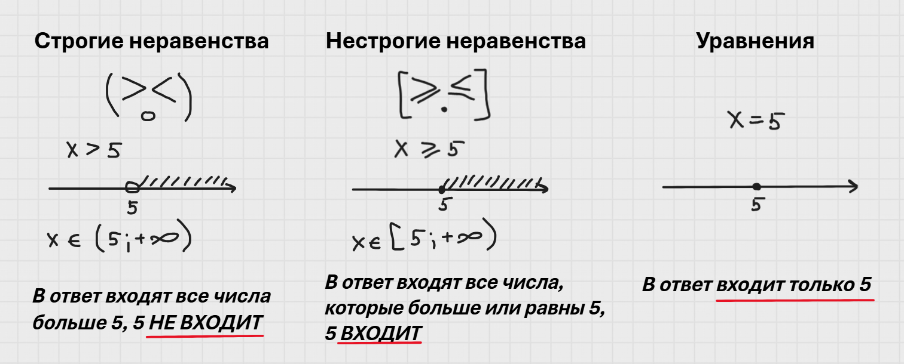
Что бы разобраться в выше сказанном, лучше рассмотреть функции отдельно.
Начнём, как обычно, с линейной функции, так как она самая простая.
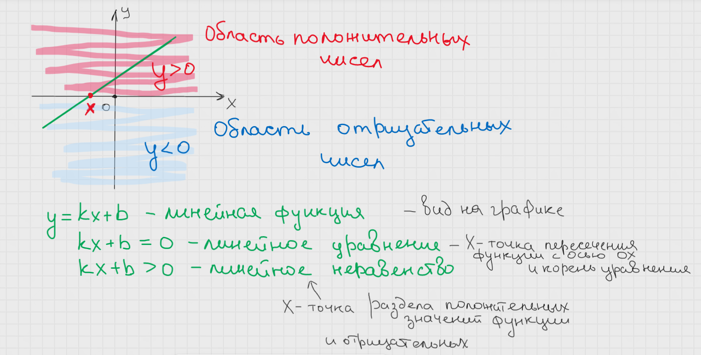
Давайте рассмотрим сразу конкретный пример:
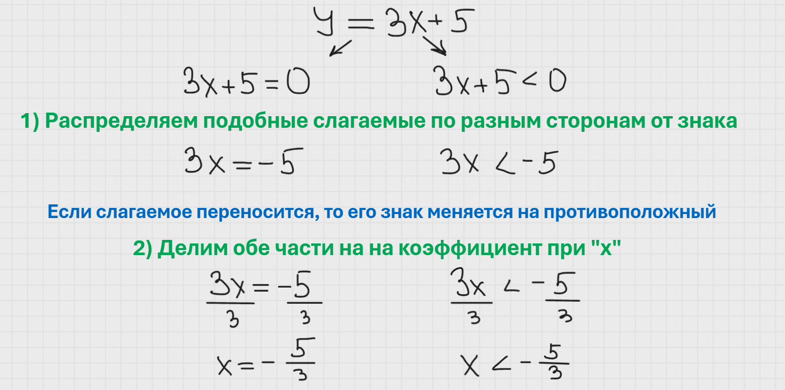
Линейные уравнения и неравенства решаются абсолютно одинаково, как и говорилось выше. Но, когда во втором пункте обе части будут делиться на отрицательное число — у неравенств переворачивается знак, у уравнений ничего не происходит.
Но вернёмся к нашему примеру:
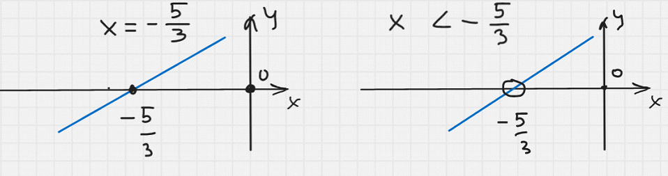
Должно быть понятно, что прямая линия может пересечь ось ОХ только в одной точке, отсюда в линейном уравнении всегда получаем только один корень. В данном случае прямая пересекает ось ОХ в точке -5/3 — и это ответ на уравнение.
Всё интереснее с неравенством:
По окончании решения мы понимаем, что функция меняет свой знак (значения по оси ОУ) в точке -5/3. Если помните, то коэффициент k отвечает за наклон и в данной функции он положительный, а значит функция возрастает. Поэтому на графике она выглядит именно так. Всё что расположено выше оси ОХ — положительные значения функции, ниже — отрицательные, на оси ОХ равны нулю. Неравенство ставит вопрос: «Когда функция меньше нуля?» или «На каких x значения y меньше нуля?»
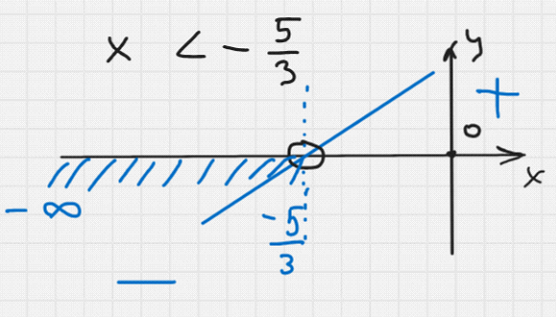
Графики читаем как текст — слева направо. На промежутке от -∞ до -5/3 функция находится под осью ОХ, значит имеет там отрицательные значения по оси ОУ. Сама точка -5/3 в ответ не входит, как мы помним (в ней значение функции равно нулю, а это в контексте данного неравенства нам не интересно). На языке математики ответ будет следующим:
Около бесконечностей всегда ставятся круглые скобки, так как конкретное значение там неизвестно. Около точки скобки ставятся в зависимости от строгости неравенства. В данном случае неравенство строгое — скобка круглая.
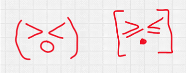
Если никак не получается запомнить, когда функция возрастает или убывает, то можно пользоваться следующим правилом: берём в ответ ту область, куда показывает знак неравенства.
В нашем неравенстве знак показывает влево, значит закрашиваем область слева от точки.
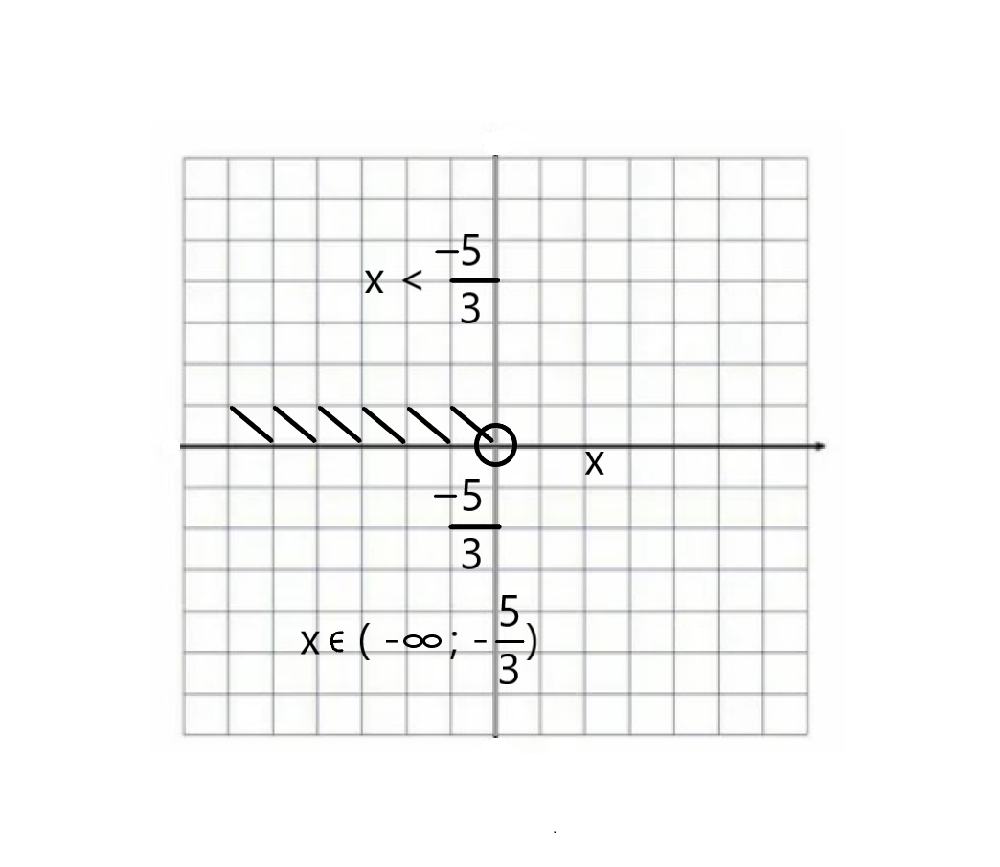
❗ Но это правило только для линейных неравенств!
Теперь рассмотрим квадратичные уравнения и неравенства.
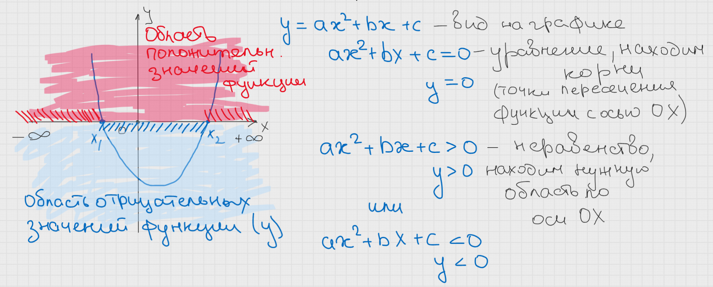
Квадратные уравнения и неравенства так же решаются одинаково. Поэтому сначала рассмотрим все виды квадратных уравнений и методы их решений. У неравенств точки будут находиться такими же способами.
Это классический вид квадратного уравнения. Формулы для нахождения корней даны в справочных материалах:
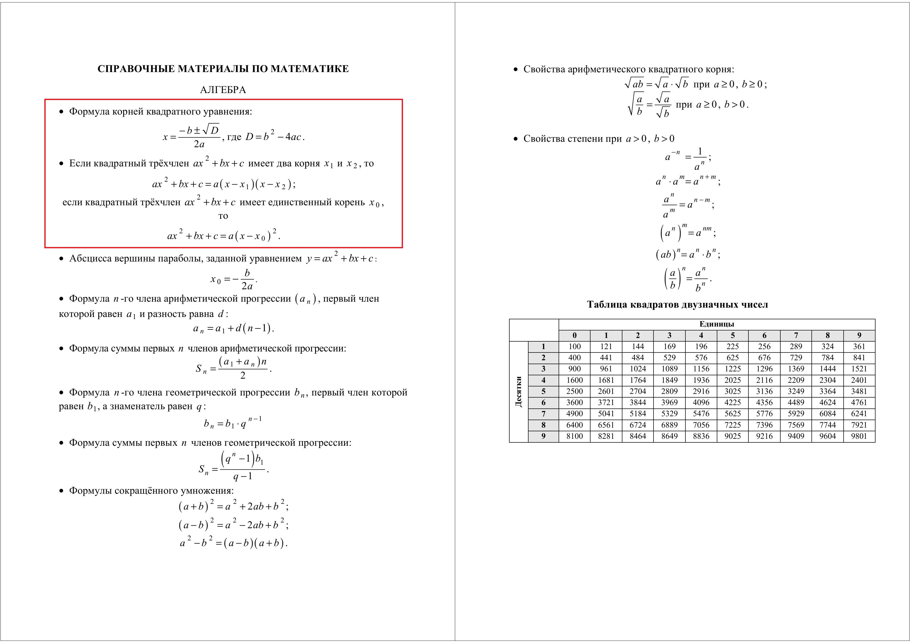
Буква D называется дискриминант. Слово знакомое, но что оно значит? — Это выражение, которое помогает определить количество корней.
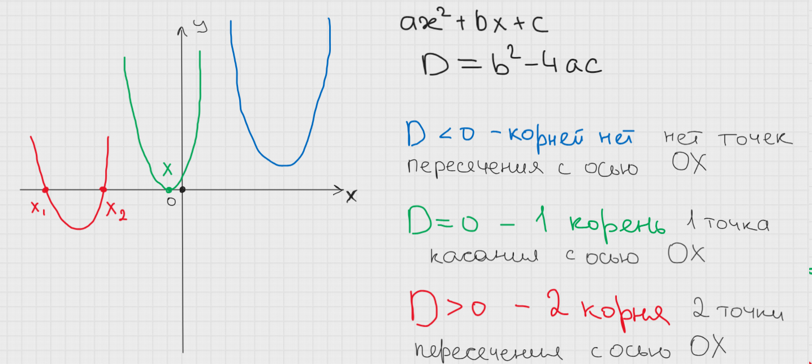
После определения количества корней пользуемся формулами:
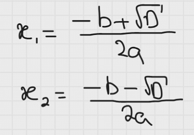
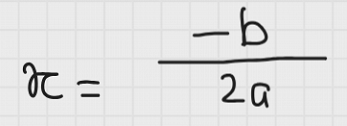
У любого вида квадратного уравнения корни можно считать по формулам из справочных материалов. Удобнее всего пользоваться ими, когда дано полное квадратное уравнение (все три коэффициента a, b, c ≠ 0). Если хоть один из коэффициентов равен нулю, то уравнения называются неполными, и есть более удобные способы их решений:
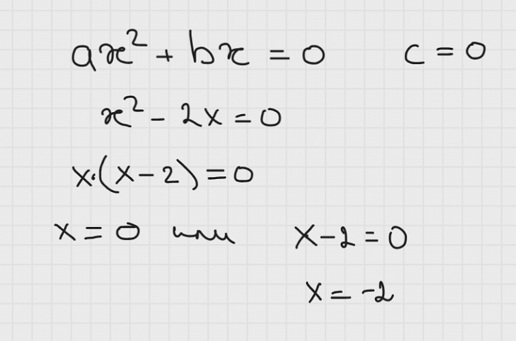
Неполное уравнение с c = 0 всегда даёт два корня, причём один из них всегда равен нулю.
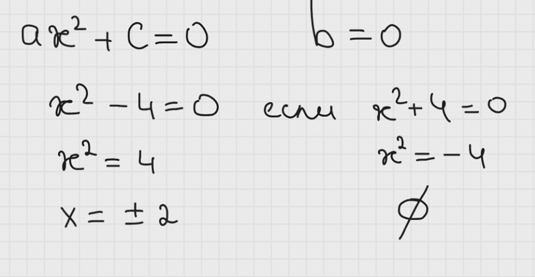
Его так же можно решить, расписав по формуле сокращённого умножения, которая так же дана в справочных материалах:
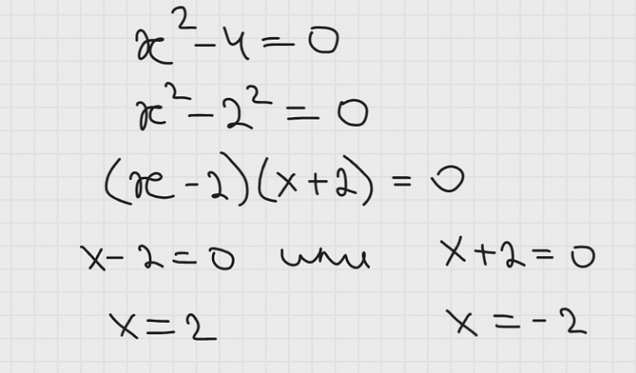
Неполное квадратное уравнение с b = 0 либо имеет два симметричных корня (имеется ввиду одинаковых по модулю, но разных по знаку), либо не имеет корней вообще.
Если и b = 0 и c = 0, то квадратное уравнение имеет всегда один корень x = 0, но в ОГЭ такие примеры не встречаются.
Теперь мы умеем находить корни квадратных уравнений, а значит на вопрос уравнения ответить сможем.
Далее рассмотрим квадратные неравенства:
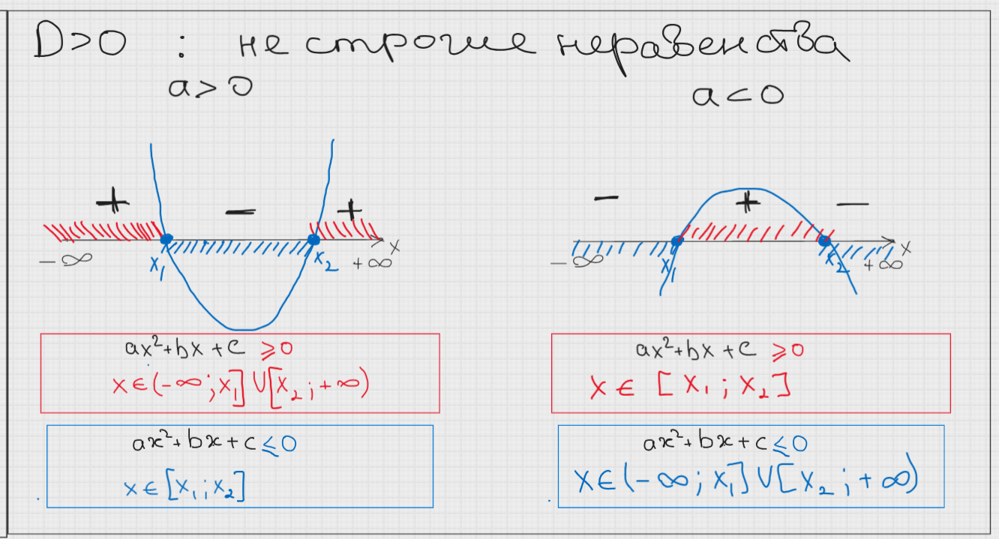
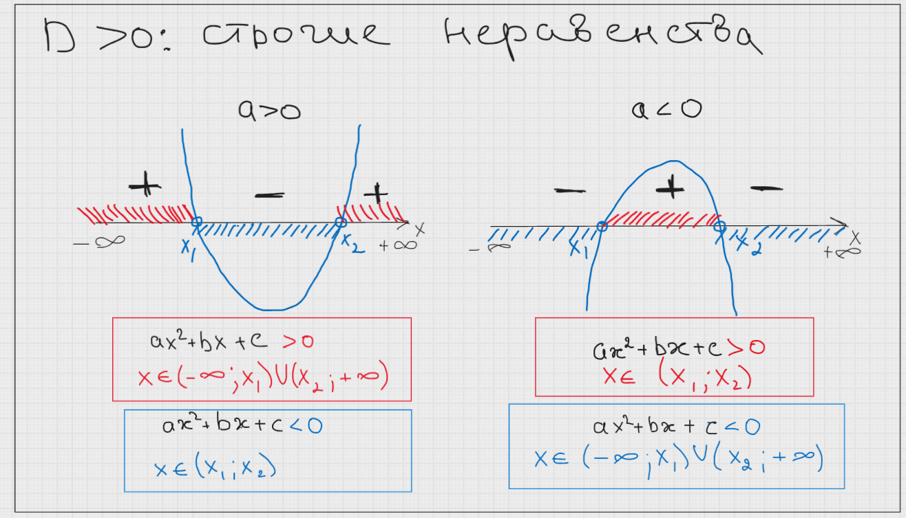
Если дискриминант положительный, то имеем две точки пересечения с осью ОХ, а это значит, что две части параболы находятся с одной стороны от оси ОХ, а третья с другой. Где какие части будут расположены зависит от знака коэффициента a. Но ответ на любой вопрос неравенства будет всегда!
На схемах плюсами и минусами обозначены значения функции на промежутках. То есть, если ветки находятся над осью ОХ — они положительные, если под — отрицательные и т.д.
Когда дискриминант равен нулю, картина интереснее. Парабола целиком находится либо над, либо под осью ОХ, а её вершина лежит на оси.
Здесь надо рассмотреть каждое неравенство в отдельности. Нестрогие неравенства включают в себя корни уравнения.
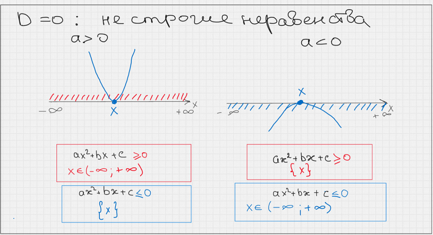
Например, нам досталась парабола ветками вверх:
Если знаком неравенства будет ≥, то нам надо указать области, где функция положительна и равна нулю. Так как вся парабола находится над осью ОХ, то положительна она будет от -∞ до корня и от корня до +∞, а равна нулю она будет в корне. Тогда нам нет смысла прерывать ответ корнем. Если же знак неравенства ≤, то указываем области, когда функция отрицательна и равна нулю. Под осью функции нет, а на оси только одна точка, поэтому в ответе будет только одна точка.
Картина обратная, если парабола ветками вниз.
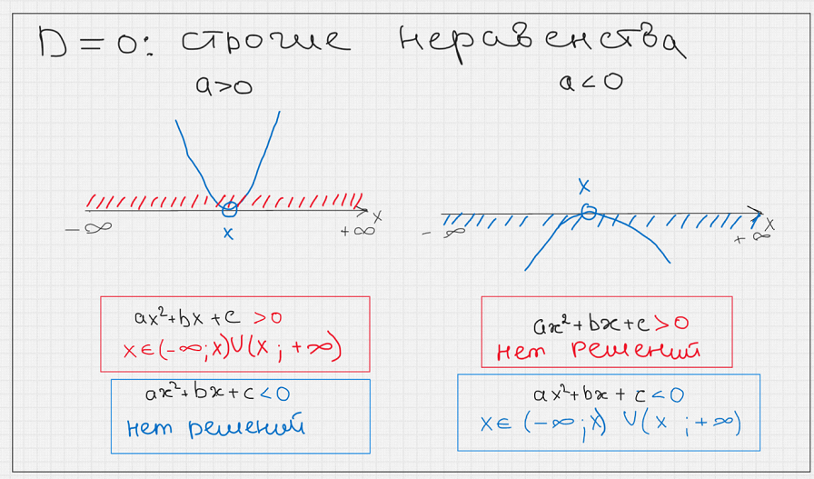
У строгих неравенств корень в ответе не учитывается. Рассмотрим случай с параболой ветками вниз:
Если знак неравенства <, то ищем функцию под осью ОХ. Так как она там находится целиком, то ответом будет вся числовая прямая. А вот при знаке >, ищем функцию над осью ОХ. Её там нет, поэтому и решений нет.
В случае отрицательного дискриминанта всё ещё проще. Ответом будет либо вся числовая прямая, либо решений не будет совсем, даже не смотря на строгость неравенств.
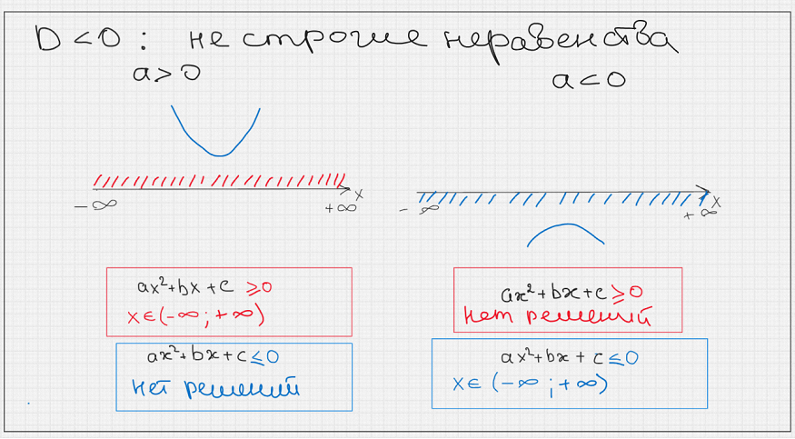
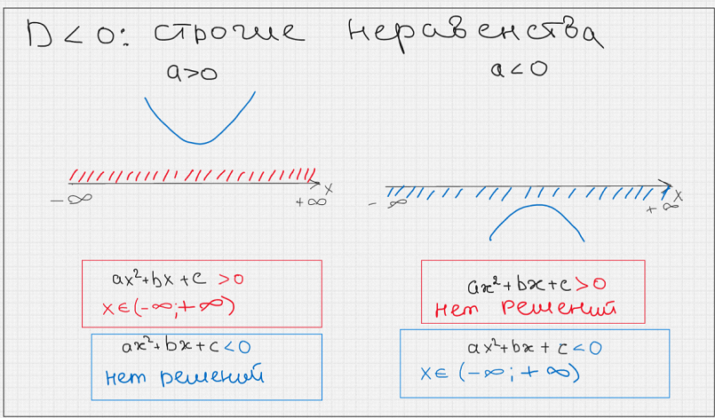
Краткая памятка по квадратным неравенствам:
- D > 0 — два корня, парабола пересекает ось OX в двух точках
- D = 0 — один корень, парабола касается оси OX
- D < 0 — нет корней, парабола не пересекает ось OX
- a > 0 — ветви параболы направлены вверх
- a < 0 — ветви параболы направлены вниз
- Строгие неравенства (> , <) — корни НЕ входят в ответ (круглые скобки)
- Нестрогие неравенства (≥ , ≤) — корни ВХОДЯТ в ответ (квадратные скобки)
- Около бесконечностей всегда ставятся круглые скобки